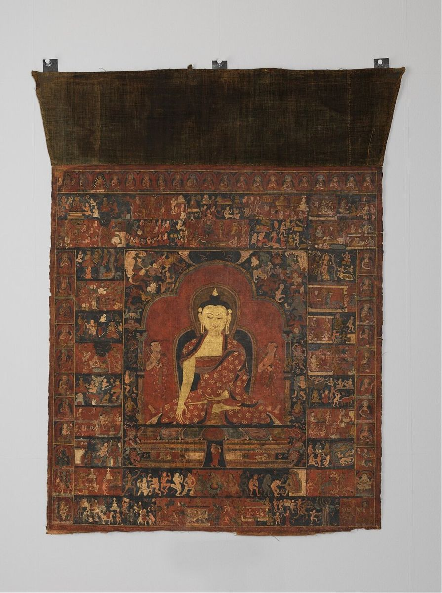

About Us
About Lapis Lotus Journal
Lapis Lotus Journal began as a set of personal notes kept while learning to read thangka paintings: which blue came from which stone, why one Buddha holds a bowl and another a vase, why some skies are pale and others deep. Those notes grew into the guides you find on this site.

Our Approach
We write in clear US English for people who are new to Himalayan art, without assuming any background in Buddhism or art history. We focus on what you can actually see on a painting and explain the meaning behind it. Where traditions differ, we say so.
The name comes from two images that appear again and again in thangka art: lapis lazuli, the deep blue linked with the Medicine Buddha and the clear nature of mind, and the lotus, the flower that rises clean from muddy water.
Respect for the Tradition
Thangkas are sacred objects for many people. We aim to describe them with care and accuracy, and we encourage readers who want to use them in practice to learn from experienced teachers within a living lineage.